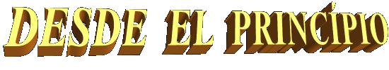

(Antecedentes)
La Eucaristía es el centro de la fe que congrega los Cristianos del mundo entero, en haz de la realidad que NUESTRO SEÑOR JESÚS CRISTO está Verdaderamente Presente con su Cuerpo, Sangre, Alma y Divinidad en el Hostia y en el Vino Consagrado. Fue la manera sensible escogida por ÉL a quedarse junto de todos aquéllos que le tiene amor y necesitan de su Divina ayuda.
Sin embargo a lo largo de la Historia de la Cristiandad, algunos cristianos y no cristianos en varias partes del mundo ponen en duda esta verdad. Ellos defienden que la Hostia es un "Símbolo" de la presencia de JESÚS, y que la Santa Misa, no es el "Memorial de la Pasión y del Sacrificio" de lo HIJO DE DIOS, pero "la memoria del último banquete" realizado en el Cenáculo, en Jerusalén. O sea, ellos dicen que ésa es solamente una simple recordación de la Postrema Cena que ÉL SEÑOR participó en compañía de los Apóstoles. Y en esta misma línea de escepticismo, algunos quieren afirmar, que la presencia física de CRISTO en la Hostia y en el Vino Consagrado no existe y además, ellos hacen la pregunta: ¿Cuántos millones de JESÚS existen?
Todavía,
la Institución del Sacramento de la Eucaristía no es ninguna fantasía,
no fue inventado por la Iglesia Católica Apostólica Romana y tampoco, no es una
representación del DIOS  Vivo, pero la "Presencia
Real y Adorable del SEÑOR" en medio de la humanidad que ÉL mismo
creó, que guía, sostiene, inspira y protege al curso de la existencia. ÉL quiere que cada persona
sienta el placer de vivir y tenga condiciones de ejecutar con más celo, dignidad y alegría la
misión de su vida. Porque solo así, podrá construir en la eternidad su habitación definitiva,
al mismo tiempo en que recibirá en el presente, ahora en la existencia
terrestre, el paternal beneficio Divino por su fidelidad al CREADOR.
Vivo, pero la "Presencia
Real y Adorable del SEÑOR" en medio de la humanidad que ÉL mismo
creó, que guía, sostiene, inspira y protege al curso de la existencia. ÉL quiere que cada persona
sienta el placer de vivir y tenga condiciones de ejecutar con más celo, dignidad y alegría la
misión de su vida. Porque solo así, podrá construir en la eternidad su habitación definitiva,
al mismo tiempo en que recibirá en el presente, ahora en la existencia
terrestre, el paternal beneficio Divino por su fidelidad al CREADOR.
Acá encontrarán los versículos de la Sagrada Escritura que preanunciaran la creación del Sacramento Divino y también, los versículos con las palabras del SEÑOR cuando Instituyó la Eucaristía, así como, un sustancial argumento que evidencia la existencia del fenómeno de la Transubstanciación. Él se pasa durante la Santa Misa, en el momento de la Consagración, bajo la acción del ESPÍRITU SANTO, transformando las especies de pan y vino, en el Cuerpo, Sangre, Alma y Divinidad del SEÑOR. Aunque sea conservada las apariencias de pan y vino, es JESÚS Quien está Realmente Presente. Este hecho es autenticado por una cantidad notable de Manifestaciones Sobrenaturales en que ÉL SEÑOR demuestra de una manera impresionante y admirable, su Presencia Divina en la Sagrada Comunión.
Por esa razón, esta presentación además de ser un precioso e inigualable testimonio para aquéllos que son fieles, representa, sobre todo, una alarma enderezada a los que están distantes, que no creen en el Sagrado Sacramento y en el valor de la Santa Misa. Esto porque, delante de la verdad que el CREADOR revela a la humanidad a través de los Milagros Eucarísticos, los argumentos contrarios se quedan sin cualquier consistencia y por sí mismo ellos caen en el ridículo.
Así, el acompañamiento atento de la descripción de los varios hechos, se tornan instrumentos de perfeccionamiento espiritual y catequesis, que es útil a todas las personas, porque los estimulará a revelar su amistad al SEÑOR, además de motivarlos amarlo mucho más.

HECHOS QUE PRECEDIERON LA INSTITUCIÓN DE LA EUCARISTÍA
 El primero milagro público
hecho por JESÚS fue en Cana de la Galilea, a pedido de Su MADRE, transformando
agua en vino, impresionando a los Discípulos por la autenticidad de Su poder, como
está descrito en el Evangelio de San Juan. (Juan 2,2-11)
El primero milagro público
hecho por JESÚS fue en Cana de la Galilea, a pedido de Su MADRE, transformando
agua en vino, impresionando a los Discípulos por la autenticidad de Su poder, como
está descrito en el Evangelio de San Juan. (Juan 2,2-11)
De la misma manera, ÉL ha hecho le magnífico y admirable Milagro de la Multiplicación de los Panes, que los cuatro evangelistas describieron: Mateo (14,16-21), (Mateo 15,32-38), también San Marcos (6,35-44), San Lucas (9,13-17) y San Juan Evangelista (6,1-13). En él, NUESTRO SEÑOR propone la idea de que la multiplicación abundante del pan para saciar la muchedumbre hambrienta, hace una alusión concreta y prefigura en lo espíritu de la humanidad, la Sagrada Eucaristía que es su Cuerpo, Sangre, Alma y Divinidad para la vida del mundo. De la misma manera como ÉL misteriosamente multiplicó los panes para saciar "la hambre material" de las personas, ÉL, el HIJO DE DIOS, se multiplica en lo cotidiano en miles de partículas consagradas en las Santas Misas que son celebradas en el mundo, para saciar "la hambre espiritual" de todas las generaciones. JESÚS se da en cada partícula consagrada, como comida para el espíritu, Sacramento de Vida y Amor, a todos que desean su Amistad, su Afecto, Ayuda, Protección y su Adorable compañía, porque ÉL es garantía de Vida Eterna.
No obstante, JESÚS ha querido primero seguir un camino cauteloso y esclarecedor, antes de Instituir el Sagrado Sacramento de la Eucaristía, porque sabiendo los hábitos y la tradición judía, ÉL sabía el tipo y la intensidad de la resistencia que los judíos pondrían para aceptar su Doctrina Divina. En el Capítulo 6 del libro de San Juan, nosotros apreciamos en plenitud SU catequesis y los obstáculos que ÉL encontró de pronto entre los Discípulos, hombres simples e ignorantes que no entendieron la esencia del significado de SUS Palabras. ÉL dijo:
"Trabajad no por la comida que perece, más por la comida que á vida eterna permanece, la cual el Hijo del Hombre os dará: porque á éste señaló el PADRE, que es DIOS". (Juan 6,27)
¿Cuándo los Discípulos preguntaron,
dónde está la comida eterna? JESÚS  les contestó:
les contestó:
"YO Soy el pan de vida: el que á MÍ viene, nunca tendrá hambre; y el que en MÍ cree, no tendrá sed jamás". (Juan 6,35)
¿Oyendo estas palabras, algunos de aquéllos que lo siguían empezaron a murmurar y diciendo que no era posible porque ÉL era el hijo de José el Carpintero que todos conocimos, entonces, como pudiera ser el Pan descendido del Cielo, el Pan de Vida"
JESÚS viniendo el escepticismo de aquellos hombres ha argumentado:
"YO Soy el pan de vida. Vuestros padres comieron el maná en el desierto, y son muertos. Este es el pan que desciende del cielo, para que el que de él comiere, no muera (Juan 6,48-50)
Era necesario insistir y continuar con su argumento auténtico, ÉL dijo:
"YO Soy el pan vivo que he descendido del cielo: si alguno comiere de este pan, vivirá para siempre; y el pan que YO daré es MÍ Carne, la cual YO daré por la vida del mundo". (Juan 6,51)
Este comentario todavía causó más consternación entre los Discípulos, porque ÉL SEÑOR hablaba objetivamente, sin las excusas y sin las circunlocuciones, hablaba de una realidad que ellos necesitaban entender. Todos teníamos que comer su Carne... Pero esto era un acto inconcebible en la mente de aquel tiempo y principalmente inaceptable en el razonamiento de los judíos. Pero JESÚS hablaba serio de un secreto confidencial que no había sido revelado a ellos y que por eso, ÉL colocó énfasis en el significado de las palabras que ha dicho:
"Y JESÚS les dijo: De cierto, de cierto os digo: Si no comiereis la Carne del
Hijo del Hombre, y bebiereis su Sangre, no tendréis vida en vosotros.
El que come MÍ Carne y bebe MÍ Sangre, tiene vida eterna: y YO le resucitaré en
el día postrero. Porque MÍ Carne es verdadera comida, y MÍ Sangre es verdadera
bebida. El que come MÍ Carne y bebe MÍ Sangre, en MÍ permanece, y YO en
él". (Juan 6,53-56)
Entonces entienda que JESÚS no estaba estableciendo símbolos y no estaba hablando de una manera comparativa. ÉL hablaba SOBRE ÉL Mismo, de SU Carne y de SU Sangre dado para la vida del mundo. Ellos estaban en una Sinagoga en Cafarnaum, y muchos de los Discípulos, oyendo esas palabras, dijeron:
"¡Dura es esta palabra! ¿Quién la puede oír"? (Juan 6,60)
Algunos se descorazonaron y quedaron sin coraje de continuar en la misión.
JESÚS todavía dijo:
"El espíritu es el que da vida; la carne nada aprovecha: las palabras que yo os he hablado, son espíritu y son vida". (Juan 6,63)
 NUESTRO SEÑOR sabía, desde el principio,
el fuerte impacto que sus palabras iban causar y también esperaba una reacción
de los Discípulos que no creían. En la verdad, muchos de ellos fueron
revelados de pronto y volvieron atrás, abandonando a JESÚS. Dijo
entonces Jesús á los doce:
NUESTRO SEÑOR sabía, desde el principio,
el fuerte impacto que sus palabras iban causar y también esperaba una reacción
de los Discípulos que no creían. En la verdad, muchos de ellos fueron
revelados de pronto y volvieron atrás, abandonando a JESÚS. Dijo
entonces Jesús á los doce:
"¿Queréis vosotros iros también"? (Juan 6,67)
Y respondió Simón Pedro en nombre de los compañeros:
"¿SEÑOR, á quién iremos? Tú tienes palabras de vida eterna. Y nosotros creemos y conocemos que Tú eres el CRISTO, el Hijo de DIOS viviente". (Juan 6,68-69)
La confesión de Simón Pedro fue auténtica y maravillosa, porque sin entender el Misterio Divino, aceptó la Palabra del SEÑOR, convencido de que era " la mayor expresión de la verdad."
JESÚS con paciencia y objetividad iba catequizando el corazón de aquellos que ÉL había escogido afín de que ellos propagasen la Cristiandad y fuesen los testigos de su Resurrección. ÉL decía a los Discípulos que la Doctrina que enseñaba no era Suya, pero de Aquél que lo envió, y ellos creyeron EN ÉL.
Procediendo así, ÉL SEÑOR seguía heroicamente con Su Divina Misión en orden de rescatar y redimir la humanidad de todas las generaciones, en obediencia a la Voluntad del SANTO PADRE ETERNO, además de ofrecer un testimonio de dimensiones infinitas, de la grandeza de su Amor por todos nosotros.